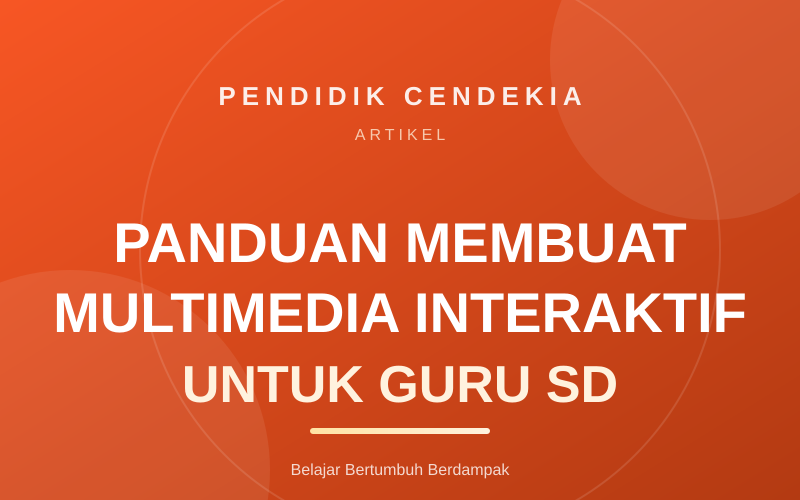

Tutorial
26 Agu 2026
Panduan Membuat Multimedia Interaktif untuk Guru SD
Ditulis oleh Tim Pendidik Cendekia
Langkah-langkah praktis menyusun media pembelajaran interaktif yang mudah dipakai di kelas — mulai dari menentukan tujuan, menyiapkan aset, hingga mengujinya bersama siswa.
Baca Selengkapnya